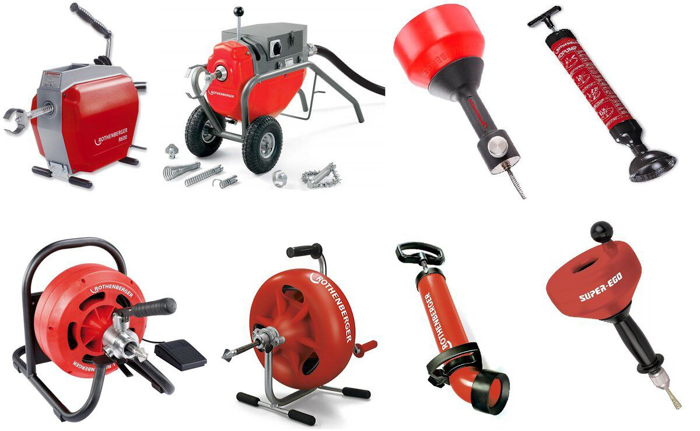

Услуги компании «Золотарь 58»
Мы предоставляем весь спектр ассенизаторских услуг в Пензе и области для частных и юридических лиц.
Круглосуточно, быстро, с гарантией результата.

Откачка канализации и септиков
Оперативная откачка и вывоз содержимого септиков, выгребных ям, колодцев, ливнёвок и пр. Собственный автопарк.

Гидродинамическая и механическая чистка
Устраняем засоры труб и канализации профессиональным оборудованием, работаем с любыми диамерами.

Видеоинспекция труб
Диагностика состояния трубопроводов камерой, поиск проблем, рекомендации по ремонту.

Обслуживание организаций
Официальные договоры, документы, комплексное обслуживание объектов юр. лиц и управляющих компаний.

Аварийный выезд 24/7
Быстрая помощь при засорах, затоплениях, сбоях. Работаем по Пензе и области, без выходных.

Реальные фото нашей работы
Мы используем современную технику. Все фото — с реальных объектов клиентов!
Преимущества работы с нами
- Официальный подрядчик по Пензе и области
- Круглосуточная поддержка
- Честные цены без скрытых платежей
- Работаем с частными лицами и организациями
- Документы для юр. лиц и управляющих компаний
- Всегда на связи по телефону: +7-902-207-36-36